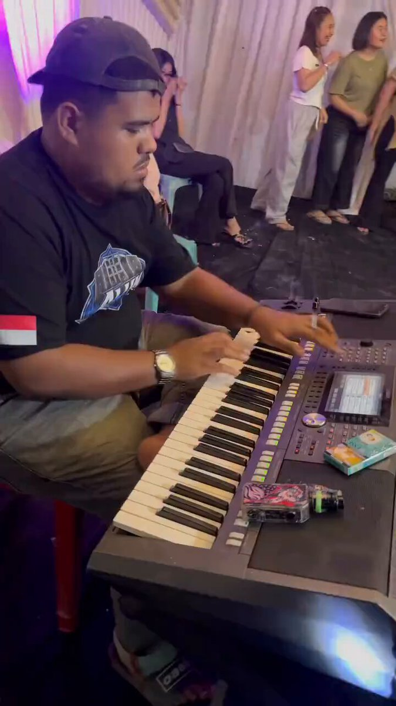
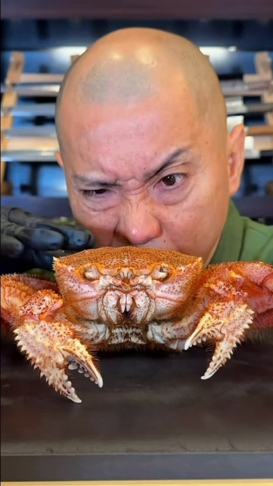
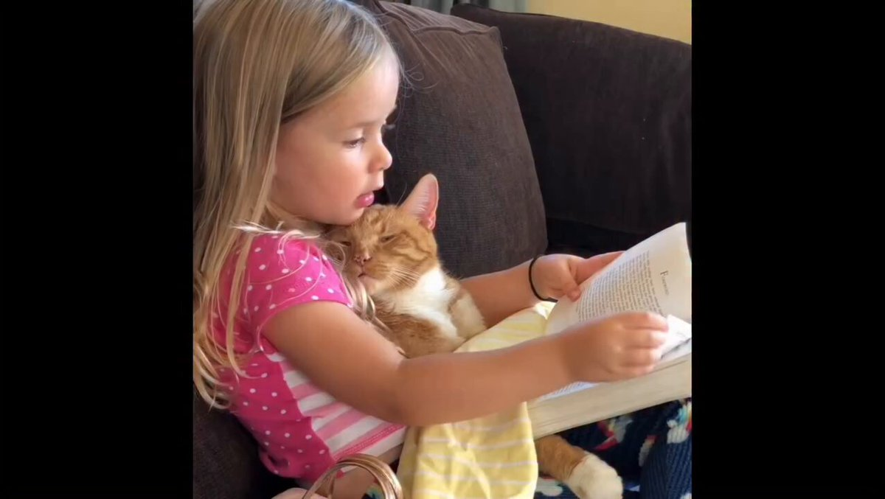
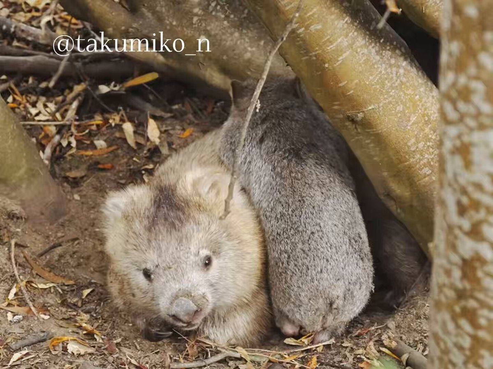
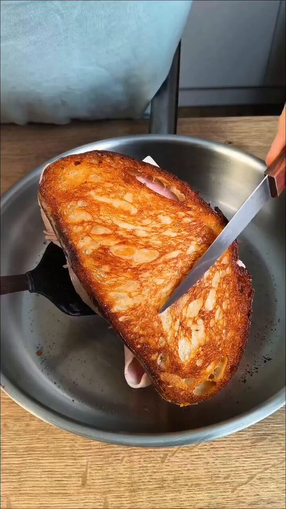
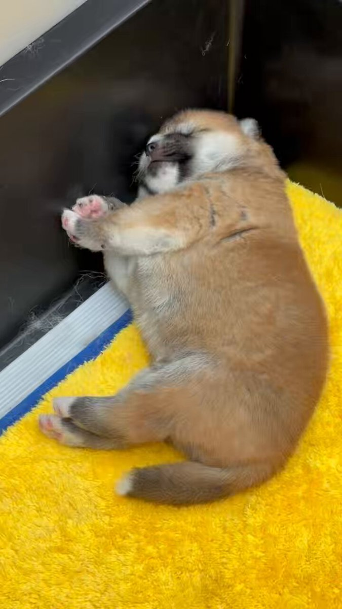

| 確認項目 | 結果 |
|---|---|
| 見回りの範囲 | 2026-09-11(JST)00:00〜24:00にadmin_stockへ新規登録されたyoutube/x全8件をDBから直接取得・突合 |
| ①文字と中身の不一致 | 今回は該当なし |
| ②ビジュアル不一致（ヤギの件型） | 3件発見・サムネイル実見で確認済み |
| ③おすすめ導線の不一致 | 今回は該当なし |
| pending.json追記・mainへのpush | 完了（コミット9e42aaf3） |
| DBへの実際の反映（GitHub Actions apply-fixesジョブ） | 4分以上ポーリングしても値が変わらず。過去にも同一原因（Secrets未設定/Actions枠切れ疑い）の前例あり。判断メモをPENDING_DECISIONS.mdへ記録 |